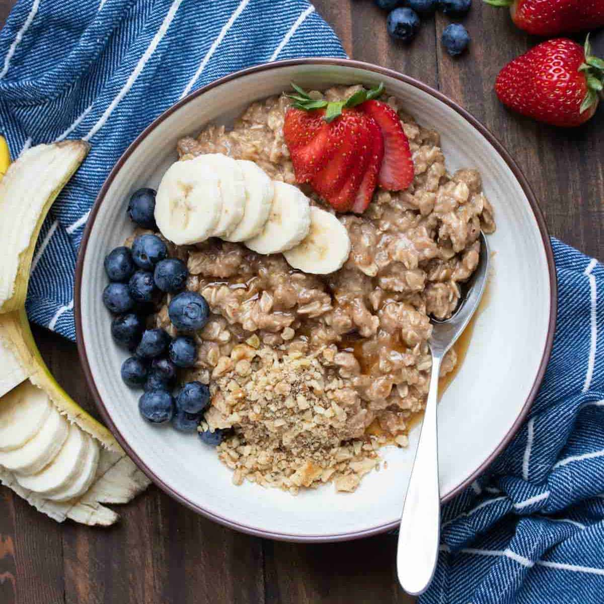

Home
Crepes
Oatmeal
Yogurt
Oatmeal Recipe

Description
Mmm oatmeal.
Ingredients
- 3/4 cups dry oatmeal
- 1 tbs brown sugar
- dash of salt
- 1 tbs chia seeds
- 1 tbs flax seeds
- 1 tbs hemp seeds
- 1 tbs fine coconut shavings
- milk of choice
- fruit of choice
Steps
- Cover oatmeal with milk of choice is about 1/4 inch of above dry oats
- Cook in microwave for 4 minutes
- Add rest of ingredients (fruit first if frozen so it will thaw)
and stir